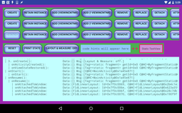
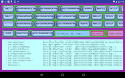
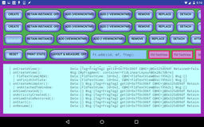
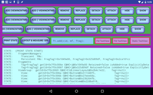

By: Barry Holroyd
FragmentLifecycleToybox provides the ability for developers to create fragments, both statically and dynamically, and step them through their life cycles in various ways, while viewing the effects in both an in-app window and in the logs.
   